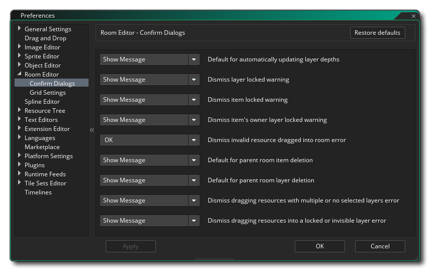
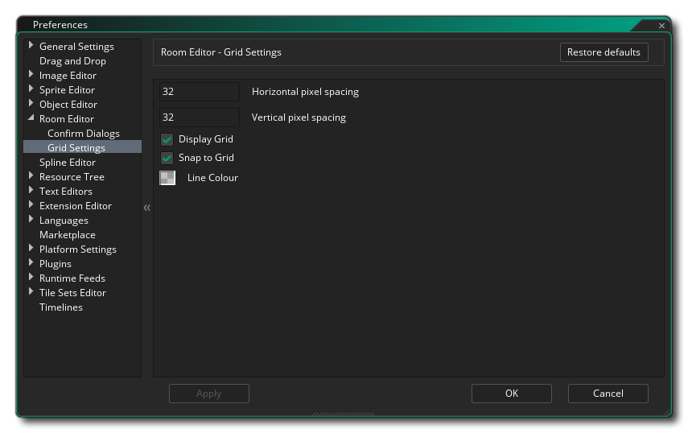

The Room Editor Preferences are used to define how the room editor will look and behave. The general settings are as follows:
- Chain fade out start distance (px): Sets the distance
from the parent window for the chain link to fade out from. Default
is 10px.
- Chain fade out stop distance (px): Sets the distance
from the parent window for the chain link to end fading out to.
Default is 100px.
- Chain Minimum Alpha: Sets the final alpha value after
the fade out falloff point for the chain alpha. Default is 0.3.
- Default layer depth spacing: When you create multiple
layers in the room editor they are automatically assigned a depth
based on their position within the layer list. This depth is
incremented by the amount given here. The default value is 100, so
each layer will be previous layer + 100 in depth.
- Default room width: Sets the initial width that will be
selected as the default for a new room. Default is 1024px.
- Default room height: Sets the initial height that will
be selected as the default for a new room. Default is 768px.
- Add default room layers - When you create any new room
resource, GameMaker Studio 2 will generate a couple of
"base" layers for you - a background layer and an instance layer.
You can switch that behaviour off here so that new rooms will have
no pre-made layers. This is on by default.
- Show room views: If you have views active within a room, this is shown by an outline where the view boundaries would be within the room, and the visibility of this area can be toggled using the dedicated button in the editor itself. However you can choose to have view boundaries invisible when you open a room by un-checking this option (the button can still be used to show them again). The default value is on, making view boundaries visible when you open a room.
The rest of the general options are related to the different colours that are used throughout the room editor interface, and if you double click on any of the swatches you can edit the colour for that setting.
Further options are available for editing from the sub-categories listed below:
The Confirm Dialogs preferences are used to change the messages that are shown in the room editor when you perform certain actions. The messages you can change are:
- Automatic response to updating layer depths - When you change layer depths a message is shown to warn you that doing this will also automatically update all the other layer depths. With this option you can choose to have the message show, have it update the layers as if you'd clicked "Ok", or have it not update anything as if you'd clicked "No".
- Automatic response to layer locked warning - If you try to delete a layer in the room and it happens to be locked, you will be shown a message by default. However setting this option to "Ok" will not show the message and just not let you delete the layer.
- Automatic response to item locked warning - If you try to delete an item it happens to be locked, you will be shown a message by default. However setting this option to "Ok" will not show the message and just not let you delete the item.
- Automatic response to item owner layer locked warning - If you try to delete an item on a layer and the layer happens to be locked (even if the item is not), then you will be shown a message by default to inform you that it can't be done. However setting this option to "Ok" will not show the message and just not let you delete the item.
- Automatic response to invalid resource drag error - If you try to add a resource to a layer that is not designated as being for that resource type (like adding a sprite to a path layer), then you will be shown a message by default to inform you that it can't be done. However setting this option to "Ok" will not show the message and just not let you add the resource.
- Automatic response to parent room item deletion - Here you can choose what happens when you delete an item that is part of a parent room (and so present in all child rooms). The default is to show you a warning message and let you decide what to do, but you can set it to "Delete All" to suppress the message and go ahead with the item delete from the parent room and all its children, or you can select "Keep All" to suppress the message abort the delete.
- Automatic response to parent room layer deletion - Here you can choose what happens when you delete a layer that is part of a parent room (and so present in all child rooms). The default is to show you a warning message and let you decide what to do, but you can set it to "Delete All" to suppress the message and go ahead with the layer delete from the parent room and all its children, or you can select "Keep All" to suppress the message abort the delete.
- Automatic response to invalid layer selection drag error - Here you can choose what happens when you drag a resource onto the room editor when you have selected multiple layers in the layer editor (or have not selected any layer at all). The default is to show a warning message but you can set this option to "OK" to suppress the message and continue, without adding any resources.
- Automatic response to locked or invisible layer drag error - Here you can choose what happens when you drag a resource onto a layer that has been locked or is flagged as invisible. The default is to show a warning message but you can set this option to "OK" to suppress the message and continue, without adding any resources.
The Grid Settings preferences are used to change how the grid overlay works, with the following options available:
- Grid horizontal spacing (px) - This will set the horizontal space for gird cells of the room grid in pixels. Default value is 32px.
- Grid vertical spacing (px) - This will set the vertical space for gird cells of the room grid in pixels. Default value is 32px.
- Display grid - This option will toggle on or off the room grid when you first open a room. It is on by default, but even if it is switched off you can enable it again using the appropriate button in the room editor itself.
- Snap to grid - With this option you can set whether a room will have assets snap to the room grid by default or not when a room is initially opened. It is on by default, but even if it is switched off you can enable it again using the appropriate button in the room editor itself.
- Grid line colour - This option permits you to set the colour (including the alpha component) of the room grid lines. The default value is (rgba) #FFFFFF30.